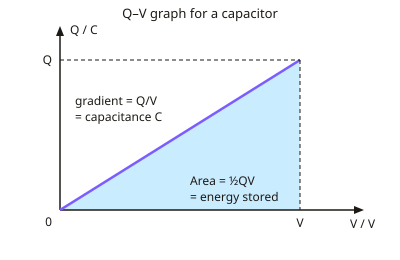

A-level Physics Year 13 · Topic 30
Capacitor energy, charging and discharging
Capacitor energy, charging and discharging is about how capacitors store charge and energy, and release them over time.
We will find the energy stored from a charge voltage graph, and combine capacitors in series and parallel.
Then we use the exponential equations for charging and discharging, the time constant, the required practical and real applications.
- 6 subtopics
- 351 questions
- Free: 30.1 notes and 10 questions
In this topic
- 30.1Energy stored in a capacitor and the Q–V graphFree below · 64 questions
- 30.2Capacitors in series and parallelOpen in Full Marks · 57 questions
- 30.3Charging and discharging a capacitor: exponential equationsOpen in Full Marks · 57 questions
- 30.4Time constant, discharge graphs and logarithmic plotsOpen in Full Marks · 58 questions
- 30.5Practical: charging and discharging a capacitor, determining the time constantOpen in Full Marks · 60 questions
- 30.6Applications of capacitorsOpen in Full Marks · 55 questions
30.1 · Free notes
Energy stored in a capacitor and the Q–V graph

Key points
- Capacitance is defined by C = Q/V, where Q is the magnitude of the charge on one plate and V is the potential difference across the capacitor. The unit is the farad (F = C V⁻¹). Typical values are μF and mF, so convert prefixes before calculating.
- The energy stored equals the work done in moving charge onto the plates against the rising p.d. across the capacitor.
- For an ideal capacitor Q ∝ V, so the Q–V graph is a straight line through the origin. The gradient = Q/V = capacitance. On a V–Q graph the gradient is 1/C.
- The area under the Q–V graph equals the energy stored. The area is a triangle, so E = ½QV.
- Substituting Q = CV gives three equivalent forms: E = ½QV = ½CV² = Q²/(2C). Pick the form that uses the quantities you are given.
- The factor ½ arises because the p.d. rises from 0 to V as charge is added, so the average p.d. is V/2.
- When a capacitor is charged from a battery, the battery transfers QV of energy. Only ½QV is stored, and the other half is transferred as thermal energy in the resistance of the circuit. This is true however large the resistance is.
- At constant C, E ∝ V², so doubling V gives four times the energy. At constant C, E ∝ Q², so halving the charge leaves one quarter of the energy.
- Energy released between two p.d.s is ΔE = ½C(V₁² − V₂²). Never use ½C(V₁ − V₂)².
- Capacitors store far less energy than batteries but can release it very quickly, giving a high power P = E/t. Applications include defibrillators, camera flashes and back-up memory supplies.
- In calculations, show the substitution, convert units (μF = 10⁻⁶ F, mF = 10⁻³ F) and give the answer in joules with a sensible number of significant figures.
In more detail
- Worked energy: 470 μF at 12 V → Q = CV = 5.6 mC and E = ½CV² = ½ × 4.7 × 10⁻⁴ × 144 = 34 mJ.
- Worked supply energy: the battery supplies QV = 5.6 × 10⁻³ × 12 = 68 mJ, so half the energy is lost as heat in the circuit resistance.
- Worked energy released: 1000 μF from 10 V to 5.0 V → ΔE = ½ × 10⁻³ × (10² − 5.0²) = 37.5 mJ (not ½C(5.0)²).
- Worked defibrillator: to store 150 J at 5.0 kV, C = 2E ÷ V² = 300 ÷ 2.5 × 10⁷ = 12 μF.
Practice
Energy stored in a capacitor and the Q–V graph: 10 questions
Pick an answer to check it, or open the answer for the explanation.
1. A 470 μF capacitor is charged to 12 V. How much energy does it store?
- 34 mJ
- 2.8 mJ
- 5.6 mJ
- 68 mJ
Show answer
A: 34 mJ. E = ½CV² = 0.5 × 470×10⁻⁶ × 12² = 0.034 J = 34 mJ. 68 mJ forgets the ½, and the other values come from wrongly using CV/2 or Q alone.
2. A capacitor stores 0.20 J when the p.d. across it is 10 V. What is its capacitance?
- 40 mF
- 20 mF
- 4.0 mF
- 2.0 mF
Show answer
C: 4.0 mF. E = ½CV², so C = 2E/V² = 0.40/100 = 4.0×10⁻³ F = 4.0 mF. Using C = E/V² forgets the factor of 2.
3. The p.d. across a capacitor is doubled. How does the energy stored change?
- It doubles
- It increases by a factor of √2
- It increases by a factor of 4
- It is halved
Show answer
C: It increases by a factor of 4. E = ½CV² and C is fixed, so E ∝ V². Doubling V multiplies the energy by 2² = 4.
4. For a straight-line graph of Q (y-axis) against V (x-axis) for a capacitor, what does the gradient represent?
- Capacitance
- Time constant
- Reciprocal of capacitance
- Energy stored
Show answer
A: Capacitance. Q = CV, so the gradient of Q against V is Q/V = C. The reciprocal 1/C would be the gradient of V against Q.
5. A 6.0 V battery charges a 2200 μF capacitor through a resistor until it is full. How much energy is transferred to thermal energy in the circuit?
- 20 mJ
- Zero
- 40 mJ
- 79 mJ
Show answer
C: 40 mJ. Q = CV = 13.2 mC. The battery supplies QV = 79 mJ but only ½QV = 40 mJ is stored. The other 40 mJ is transferred as thermal energy in the resistance.
6. A capacitor holds 60 μC of charge at a p.d. of 20 V. What is the energy stored?
- 3.0 mJ
- 0.30 mJ
- 1.2 mJ
- 0.60 mJ
Show answer
D: 0.60 mJ. E = ½QV = 0.5 × 60×10⁻⁶ × 20 = 6.0×10⁻⁴ J = 0.60 mJ. The value 1.2 mJ is QV, which omits the ½.
7. A graph of p.d. V (y-axis) against charge Q (x-axis) is plotted for a capacitor. What does the area under the line represent?
- Capacitance
- Energy stored
- Charge stored
- Reciprocal of capacitance
Show answer
B: Energy stored. Area = ∫V dQ, the work done in charging, which is the energy stored. The gradient of this graph, not the area, gives 1/C.
8. Which expression can NOT be used to calculate the energy stored in a capacitor?
- Q²/(2C)
- ½CV²
- ½QV
- ½Q²C
Show answer
D: ½Q²C. Substituting V = Q/C into ½QV gives Q²/(2C), not ½Q²C. The other three expressions are all correct forms of the energy stored.
9. A camera flash uses a 150 μF capacitor charged to 300 V and discharges it in 2.0 ms. What is the mean power delivered?
- 340 W
- 3.4 kW
- 6.8 kW
- 13 kW
Show answer
B: 3.4 kW. E = ½CV² = 0.5 × 150×10⁻⁶ × 300² = 6.75 J. P = E/t = 6.75/0.0020 ≈ 3.4 kW. The value 6.8 kW comes from using CV² instead of ½CV².
10. A Q–V graph is a straight line through the origin to the point (8.0 V, 40 μC). What is the energy stored at 8.0 V?
- 160 μJ
- 320 μJ
- 80 μJ
- 5.0 μJ
Show answer
A: 160 μJ. Energy is the area of the triangle: ½ × 8.0 × 40×10⁻⁶ = 1.6×10⁻⁴ J = 160 μJ. The 320 μJ option is the full rectangle QV.
Keep going in Full Marks
Full Marks has 64 questions on Energy stored in a capacitor and the Q–V graph (54 more than here), set out in practice levels. You also get notes and 3D models for all 6 subtopics of Capacitor energy, charging and discharging, plus games, timed exams and past papers.